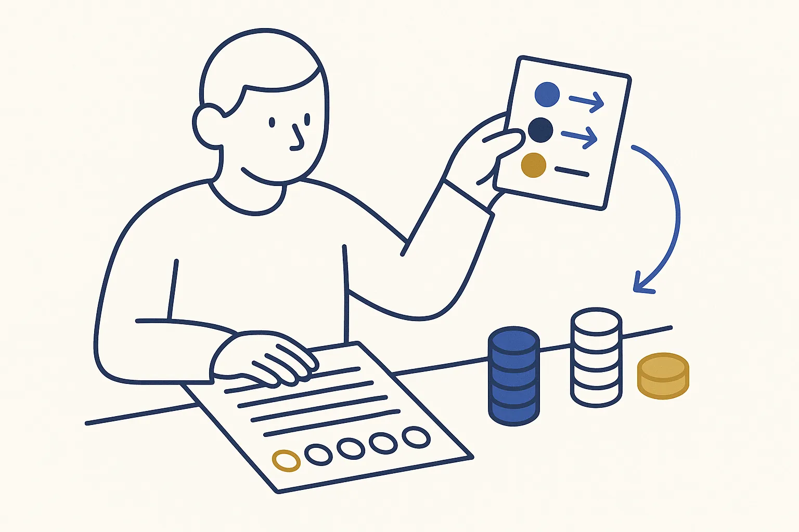

Samples
Small builds for one afternoon
Each sample comes from a use case and is cut down to something you can build live in about 45 minutes, on example data. Two of them are the live builds on a Build Day.

Categorise bank lines with a rule fileOne month of anonymised bank lines in, a categorised overview and a rule file out.beginner Decide once about your top fifty sendersOne month of sender names in, a decision per sender and a daily summary out.beginner
Decide once about your top fifty sendersOne month of sender names in, a decision per sender and a daily summary out.beginner A cockpit for the three lists you check every weekThree lists with one shape, one page that shows them together.intermediate
A cockpit for the three lists you check every weekThree lists with one shape, one page that shows them together.intermediate One list, three placesA list your company keeps in three places becomes one source with two generated publications.beginner
One list, three placesA list your company keeps in three places becomes one source with two generated publications.beginner Turn twenty receipts into structured dataPhotos of receipts in, one small metadata file per receipt and a table out.beginner
Turn twenty receipts into structured dataPhotos of receipts in, one small metadata file per receipt and a table out.beginner Rules that catch errors before they reach a customerA sample of real records in, written validation rules and a list of violations out.intermediate
Rules that catch errors before they reach a customerA sample of real records in, written validation rules and a list of violations out.intermediate